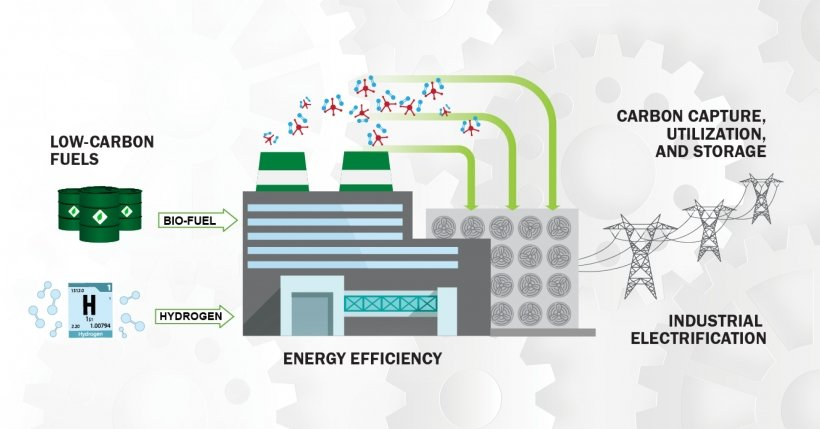

First of all, a big thank you to my coterie of energy nerds, many of whom I spoke with last week at the ARPA-E Summit. I sincerely appreciate the encouragement you’ve given me to continue this particular screed. It sometimes feels like I’m repeating myself, either for emphasis or because the subject matter can be pretty constrained, so I appreciate your patience and, as always, welcome your comments. But let me emphasize again that I haven’t bet on a horse in this particular race. Instead, I’m simply trying to share my views on the Science that underpins the current pervasive anxiety about climate.
Today’s installment is going to be relatively brief. Between finishing Saul Griffith’s book and the Summit, I haven’t had time to think carefully and independently about where the energy field is headed, particularly regarding “using proven tools to improve carbon capture by biological systems”, which seems to be my mission statement. But in my peregrinations, I have observed that many otherwise rational scientists and engineers have adopted the political vocabulary of “climate change/crisis”, “fossil fuels”, and (worst of all) “decarbonization”. While language is the sine qua non for communication, it’s necessarily limiting. The words we choose affect how we think. 1
These phrases refer to concepts that are hackneyed. By failing to recognize the limits that language imposes, it’s too easy to fall into intellectual delusions. I’ve tried to address this tendency here by proposing the alternatives of “climate control” and “geologic carbon”, but “decarbonization” is tricky. Unfortunately, decarbonization seems to have emerged as a strange fixation for many climate crisis enthusiasts.
Keeping to form, the Department of Energy has developed a ‘roadmap’ for decarbonization in the industrial sector:

As with physical roadmaps (for my younger readers, these were pieces of paper that older adults relied on before GPS and smartphones), DOE’s roadmaps help define a path toward a chosen destination. But, unlike a map for an old-fashioned road trip, these charts do not include helpful elements like distance, time, or enjoyable landmarks along the way. Instead, the waypoints are defined mainly to support the formulation of an integrated effort, with stakeholders more-or-less agreeing on a BHAG (big hairy audacious goal) to be achieved at some distant future date.
Decarbonization, as a BHAG, is similar in practice to an older motto, “weaning off fossil fuels.” This is routinely expressed factually as if carbon has realistic alternatives in every single instance. Granted, extensive spreadsheets crafted by academic experts claim to show substitution and transition as a fact, usually starting with the specious assertion that we get a shitload of energy every day from the sun, so “all” we have to do is capture it. That’s a task firmly in the “easier said than done” category.
I view the problem instead through the lens of (simple) chemistry. Carbon, with a molecular weight of 12, is the element of storage for a high-capacity battery. It can store up to 8 electrons, or 2/3 electrons per gram. That’s twice as dense as the current state-of-the-art, lithium. Only hydrogen, at 1 electron per gram, could conceivably be better. And, of course, the chemistry of hydrocarbons (the highest energy form of geologic carbon) lies between the two elements. So the most challenging part, stable energy storage in a dense, portable format, has already been accomplished for us! Why would we give that up?
The fetishization of carbon reduction is unnatural and irrational. Deleting carbon from the toolbox is misguided, and using the political word “decarbonization” unnecessarily vilifies a valuable element. The notion of selecting certain carbon atoms as ‘clean’ and others as ‘dirty’ has no basis in physical science. It leads to the misleading characterization of biofuels (per the above graphic) as “low-carbon”. That’s numerically and provably wrong.
The most distressing aspect is this: Implementing climate control won’t be solved by decarbonization. We’ve already changed the composition of the earth’s atmosphere by burning geologic carbon for centuries. Decarbonization of our future emissions, however laudable and necessary in the long run, cannot solve the problem in the short run. And we’re on borrowed time.
Aha! I may have an alternative to decarbonization! “Replenishment” of geologic carbon. We’ll see if that lasts until the next installment.
Thank you for reading Healing the Earth with Technology. This post is public so feel free to share it.
If you want to explore this philosophical point further, I suggest Richard Rorty’s modern classic, “Contingency, Irony, and Solidarity” . It’s heavy philosophy but insightful, and you only need to ingest the first chapter of the first book to appreciate its profundity.